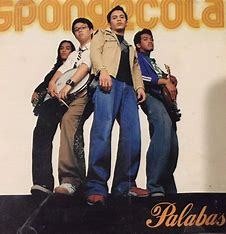

Jeepney
by: Spongecola
Lyrics by: Joelin Caponpon;
Orginal Video

Bumaba 'ko sa jeepney
Kung saan tayo'y dating magkatabi
Magkahalik ang pisngi nating dal'wa
Nating dalawa
Panyo mo sa aking bulsa
Oh, ang kahapo'y naroon pa rin
Ang tawa nati'y humahalay
Sa init nating dalawa
Subalit ngayo'y wala na (wala na)
Ikaw ay lumayo na (lumayo na, ha-ha-ha)
Naaalala ko ang mga gabing
Nakahiga sa ilalim ng kalawakan
Naaalala ko ang mga gabing
Magkatabi sa ulan
Kulay ng iyong ngiti
At tikwas ng iyong buhok
Ang lambot ng iyong labi
Ng iyong labi
Kahit anino mo sa malayo
Ay nais masulyapan kaagad
Upang mapawi
Ang lamig
Subalit ngayo'y wala na (wala na)
Ikaw ay lumayo na (lumayo na, ha-ha-ha)
Naaalala ko ang mga gabing
Nakahiga sa ilalim ng kalawakan
Naaalala ko ang mga gabing
Magkatabi sa ulan
Subalit ngayo'y wala na
Ikaw ay lumayo na (lumayo na, ha-ha-ha)
Naaalala ko ang mga gabing
Nakahiga sa ilalim ng kalawakan
Naaalala ko ang mga gabing
Magkatabi sa ulan
Naaalala ko ang mga gabing
Nakahiga sa ilalim ng kalawakan
Naaalala ko ang mga gabing
Magkatabi sa ulan
(Naaalala, naaalala)
Magkatabi sa ulan (naaalala, naaalala)
Itong awit ng araw (naaalala, naaalala)
(Naaalala, naaalala, naaalala, naaalala)
(Naaalala, naaalala, naaalala, naaalala)